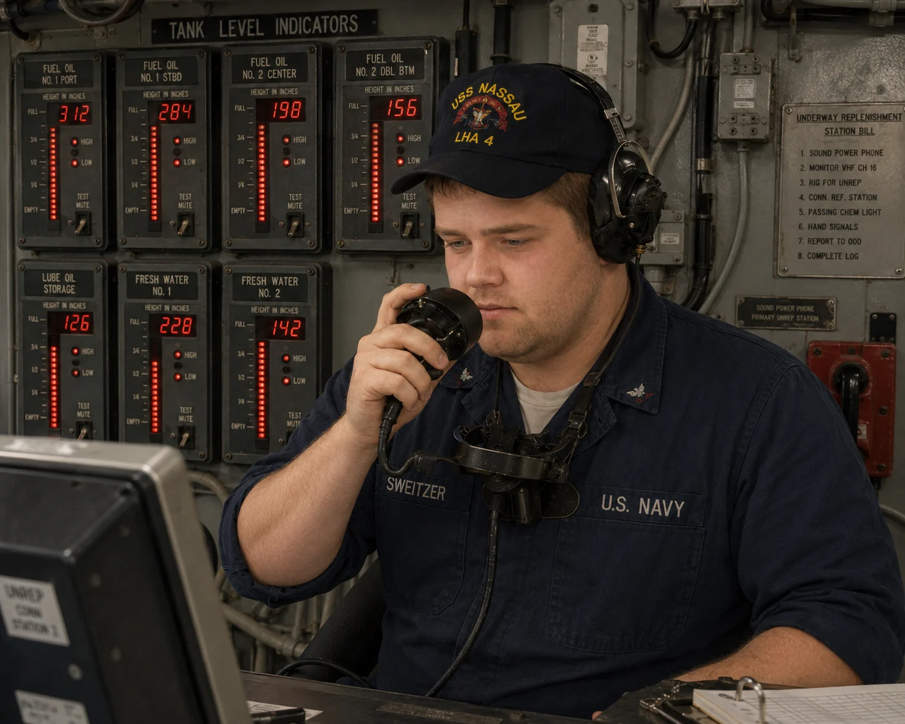
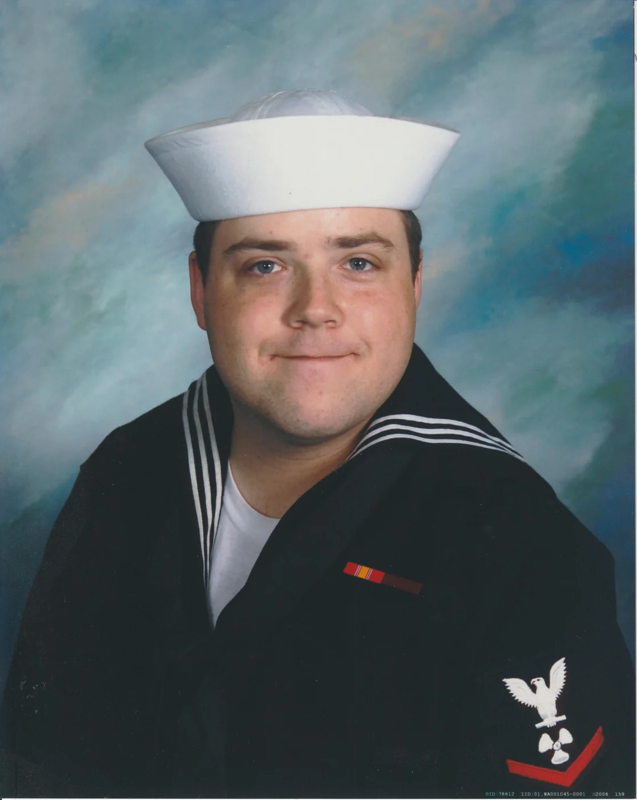

Founder
Brandon Sweitzer
Navy veteran · Student leader · Operations professional · Energy entrepreneur in development
Brandon founded Sweitzer Ventures as a long-range home for the energy, technology, and business ideas he intends to develop through continued education, disciplined research, and practical project experience.
Background
Experience shaped by service, operations, and a return to education.
Brandon is a U.S. Navy veteran and graduate of the Naval Nuclear Power Program. He served as a Machinist’s Mate aboard USS Springfield and USS Nassau, working in demanding engineering environments where procedural discipline, accurate communication, teamwork, and reliability were essential.
After military service, he built experience in customer operations, team leadership, quality improvement, training, and small-business ownership. Those roles reinforced the importance of designing systems that people can understand, operate, and improve.
After returning to college following a long gap, Brandon completed degrees in Business Administration and Management at Coastline College. He is continuing his education at California State University, Fullerton, pursuing business administration with an entrepreneurship focus alongside electrical engineering.
His long-term objective is to combine technical education, business development, operations experience, and service-centered leadership to build reliable energy and industrial ventures.
The path
From naval service to future ventures.
Three images representing the technical foundation, early service, and present professional chapter behind Sweitzer Ventures.


Leadership
Command Through Service: Servant Leadership Lessons from Star Trek Captains
Brandon examines how leadership can balance authority, trust, accountability, empathy, and the growth of the people being led.